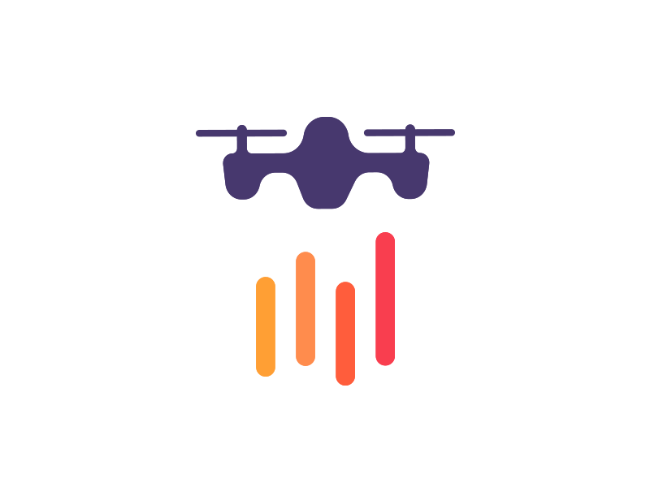

Weather
-
5 - 19 °C
-
57 %
-
4.1 km/h
-
19:40:14
Scan Complete
SAVE
{{ datepickerTitle }}
{{ customMessage }} {{ selectedDay }} {{ monthNames[localdate.getMonth()] }} {{ localdate.getDate() }}, {{ localdate.getFullYear() }}
{{ currentViewDate.getFullYear() }} {{ currentMonthName() }}
{{ day.short }}
{{ day.daydate }}
{{ time }}
{{ edittime.formatted }}
am
pm
Select Field Action:
Write Extra Comments:
CANCEL
NEXT
ADD NEW ACTION TO CALENDAR FIELD
[.750]
[.562]
[.375]
ExG
ExG-ExR
GLI
NGBDI
NGRDI
SAVI-GREEN
VARI
Rotate Left
Move Left
Move Up
Move Down
Move Right
Rotate Right
Save
X

Processing...
Please wait while we set things up for you!
Please fill out the form, also do not forget create your polygon in order to specify area field
OK
- Select elements
- Draw polygon
- Add annotation
- Edit elements
- Delete elements
- Export map
Gallery Sync Started
X